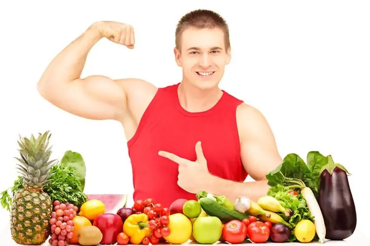
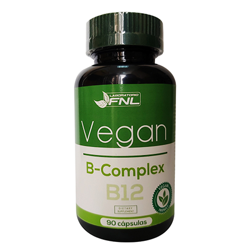
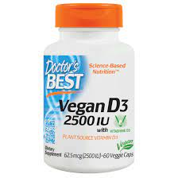
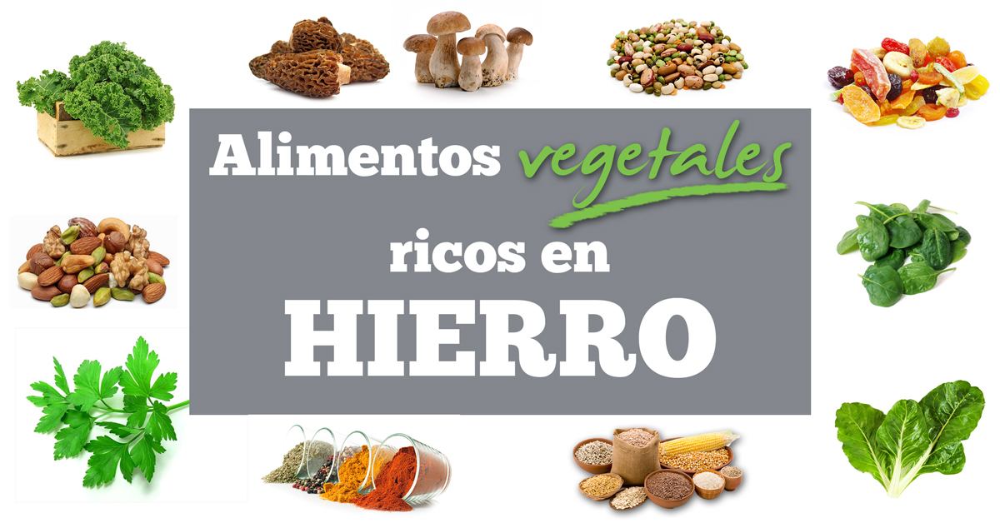

Efectos en la salud
Efectos sobre la salud La Academia de Nutrición y Dietética de Estados Unidos, la Asociación Dietética Británica, los Dietistas de Canadá y la Asociación de Dietistas de Australia consideran que las dietas veganas bien planificadas son apropiadas para todas las etapas del ciclo de vida, la Agencia Española de Consumo, Seguridad Alimentaria y Nutrición considera que "los lactantes y niños de corta edad no deberían recibir una dieta vegana." mientras que la Sociedad Alemana de Nutrición no las recomiendan en bebés, niños ni adolescentes, ni durante el embarazo ni la lactancia, aunque recalca que "los que de todos modos quieren seguir dietas veganas, deberían considerar el consumo de alimentos específicos, alimentos fortificados y/o suplementos vitamínicos". En 2014, la Oficina Federal de Salud Pública de Suiza señaló que la el 6º Informe sobre Nutrición de Suiza identifica solo a la "dieta ovo-lacto-vegetariana para adultos sanos como una dieta equilibrada" mientras que también señaló que la falta de nutrientes en otras dietas vegetarianas puede generar deficiencias de nutrientes. La eliminación de proteínas animales en la dieta, especialmente aquellas provenientes de carnes rojas, se asocia con algunos efectos beneficiosos para la salud tales como la protección contra algunos tipos de cáncer y la disminución del riesgo cardiovascular. Por lo general, las personas que siguen dietas veganas suelen ser más delgadas y tienen niveles más bajos de colesterol y presión sanguínea, lo cual podría ejercer un efecto protector. No obstante, las dietas veganas también pueden causar importantes carencias nutricionales, que solo se pueden prevenir con alimentos fortificados o la toma regular de suplementos dietéticos. La deficiencia de vitamina B12 es muy frecuente entre los veganos, lo cual puede provocar alteraciones vasculares tempranas y un aumento del riesgo de desarrollar enfermedades relacionadas con la ateroesclerosis, así como trastornos neurológicos.30151 Una revisión sistemática con meta-análisis publicada en 2021 concluyó que las dietas a base de plantas pueden comprometer la salud ósea en general. Las personas que siguen dietas a base de plantas presentan una masa ósea más baja que la de las personas con una alimentación omnívora. Los riesgos de carencias nutricionales y consecuencias graves sobre la salud son especialmente importantes durante el embarazo, en los bebés y en los niños, que en algunos casos han provocado la muerte. Una revisión de la literatura médica de 2019 dio como resultado que el seguimiento de dietas vegetarianas esta relacionada con el desarrollo del trastorno alimentario denominado ortorexia nerviosa (una obsesión patológica por comer comida considerada saludable), pero concluyó que más investigación longitudinal es necesaria para investigar si seguir una dieta vegetariana es un factor de riesgo para la aparición de este trastorno. 
Embarazo, bebés y niños
La Academia de Nutrición y Dietética de Estados Unidos y la Asociación de Dietistas de Canadá consideran que las dietas vegetarianas bien planificadas son apropiadas para todas las etapas de la vida, incluso durante el embarazo, la lactancia, la infancia y la adolescencia, pero advierten de los riesgos de una mala planificación y la falta de suplementación de diversos nutrientes. En los lactantes amamantados por madres veganas, el riesgo de sufrir carencias de vitamina B12 es muy elevado, por lo que una fuente regular de esta vitamina es esencial para las mujeres en período de gestación y lactancia, o para los bebés si su madre no toma ningún suplemento.30 Las dietas vegetarianas suelen ser altas en ácido fólico, lo cual puede enmascarar la deficiencia de vitamina B12 hasta que ya se han producido trastornos neurológicos y aparecen los primeros síntomas. En 2016, la Sociedad Alemana de Nutrición señaló que no recomendaba una dieta vegana para los bebés, los niños, los adolescentes, las mujeres en gestación y durante la lactancia. Según Reed Mangels, no parece que las reservas de vitamina B12 atraviesen la placenta, además los investigadores han reportado casos de deficiencia de esta vitamina en madres vegetarianas lactantes, que está vinculada a deficiencias y trastornos neurológicos en sus hijos. Es posible que las mujeres veganas gestantes también necesiten consumir más vitamina D, según la cantidad de luz solar que reciban y si están comiendo alimentos fortificados. Es probable que los médicos recomienden suplementos de hierro y ácido fólico para todo tipo de mujeres embarazadas (veganas, vegetarianas y no vegetarianas). Se debe consultar a un médico o a un dietista certificado sobre si se debe tomar o no suplementos durante el embarazo. Hay poca información sobre el crecimiento de niños veganos no-macrobióticos, aunque los resultados sugieren que estos niños tienden a ser ligeramente más pequeños, pero dentro de los rangos normales de peso y altura, y presentan obesidad con menos frecuencia. Una revisión de 2021 de la literatura científica sugiere que una dieta vegana bien planificada y que incluya suplementos probablemente proporcione las cantidades recomendadas de nutrientes para el correcto crecimiento infantil e incluso podría ser beneficiosa en algunos aspectos. No obstante, aún faltan datos sobre cinco nutrientes críticos, por lo que a fecha de 2021 no se pueden obtener conclusiones definitivas. Otras complicaciones documentadas en niños veganos con dietas mal planificadas incluyen raquitismo, escorbuto y kwashiorkor. En un estudio de Suecia se encontró que, aunque algunos adolescentes emprenden dietas vegetarianas como una moda, otros tienen como principal motivación los aspectos éticos y ecológicos. Según los investigadores de dicho estudio, en casos de adolescentes que no tienen a su salud como una razón para cambiar a una dieta vegetariana, esta falta de motivación puede generar un bajo interés en los aspectos nutricionales y descuidar la correcta planificación de la dieta, lo que puede ocasionar problemas de salud.
Nutrición
La Sociedad Alemana de Nutrición tiene la posición de que resulta difícil o imposible conseguir la cantidad necesaria de determinados nutrientes con una dieta pura basada solo en alimentos naturales de origen vegetal.36 El nutriente más crítico en las dietas veganas es la vitamina B12,36 que en los alimentos naturales (sin fortificar) solo está presente en cantidades suficientes para los seres humanos en los de origen animal, por ello los veganos tienden a suplementar este nutriente en alimentos fortificados y suplementos.22166 No todos los alimentos veganos son saludables o nutritivos, ya que si se añaden altos contenidos de azúcar, grasa o sal, resultan nutricionalmente desfavorables.36 Las dietas veganas, bien planificadas, tienden a ser más ricas en fibra dietética, magnesio, ácido fólico (vitamina B9), vitamina C, vitamina E, potasio y fitoquímicos, y más bajas en calorías, grasa saturada y colesterol. Sin embargo, la eliminación de todos los productos de origen animal puede generar carencias nutricionales, principalmente de vitamina B12, vitamina D, calcio, ácidos grasos omega-3, yodo, y en ocasiones hierro, cinc y selenio. Para prevenir estas deficiencias nutricionales se puede recurrir a diseñar una dieta vegana con los nutrientes necesarios, consumir alimentos fortificados con estos nutrientes o a la toma regular de suplementos dietéticos, a excepción de la vitamina B12 que es la única que no se puede conseguir sin alimentos fortificados o suplementos. Otros nutrientes como las proteínas capaces de proporcionar los aminoácidos esenciales se pueden obtener de la mezcla de fuentes proteícas vegetales como legumbres, nueces y leches de base de plantas. Proteínas Los vegetales son fuente de proteínas y aminoácidos esenciales, aunque en menor cantidad que los alimentos de origen animal. Los veganos y vegetarianos pueden obtener suficientes proteínas y aminoácidos consumiendo una variedad granos enteros, legumbres, soja, frutas, nueces y semillas.178 Generalmente las personas omnívoras obtienen una tercera parte de sus proteínas de las plantas, los ovolactovegetarianos la mitad y los veganos las obtienen en su totalidad de fuentes vegetales.179 Sin embargo persiste la inquietud sobre si las proteínas de origen vegetal suministran la cantidad adecuada de aquellos aminoácidos que no son sintetizados por el cuerpo humano. Las fuentes de proteína vegetal son las legumbres, tales como la soja (que es usada en la elaboración de tofu, tempeh, proteína vegetal texturizada, leche de soja y edamame), guisantes, cacahuetes (maní), frijoles y garbanzos (este último a menudo es acompañado con hummus); granos como la quinua, arroz, maíz, cebada y el trigo (consumido en algunas ocasiones en pan de trigo integral, bulgur y seitán); y frutos secos como almendras y semillas de cáñamo y de girasol. La quinoa es el único alimento de origen vegetal que provee todos los aminoácidos esenciales, equiparándose su calidad proteica a la de la leche, y es rica en oligoelementos y vitaminas. Sus granos son altamente nutritivos, superando en valor biológico, calidad nutricional y funcional a los cereales tradicionales (tales como el trigo, el maíz, el arroz y la avena) y no contiene gluten. Mangels y su grupo de investigadores dicen que el consumo alimenticio de referencia (RDA por sus siglas en inglés) de proteínas (0,8 g/Kg de peso corporal) de soja satisfará el requisito biológico de aminoácidos. Añaden que el Departamento de Agricultura de los Estados Unidos ha dictaminado para su Programa federal de almuerzos escolares que la proteína de soja puede reemplazar a las proteínas de la carne. Los demás productos de origen animal siguen dentro del programa. Las combinaciones tradicionales que contienen altas cantidades de todos los aminoácidos esenciales son: arroz con frijoles, maíz con frijoles y hummus con pita de trigo integral. En el 2009 la Academia de nutrición y dietética de los Estados Unidos dijo que el consumo de una diversa variedad de vegetales durante el transcurso del día, puede proporcionar todos los aminoácidos esenciales para los adultos sanos, lo que indica que no es necesaria la combinación de ingredientes vegetales proteicos en un mismo plato sino que pueden ser consumidos por separado durante el transcurso de la jornada. Mangels y su grupo, escribieron que hay pocas razones como para advertir a los veganos que aumenten su ingesta de proteínas, pero prefieren pecar por exceso de precaución —teniendo en cuenta la poca digestibilidad de la proteína vegetal y su pobre cantidad de aminoácidos—, así que recomiendan que los adultos sanos aumenten a 1 g de proteína por kilogramo de peso corporal, lo que equivale a un incremento del 25% en el consumo alimenticio de referencia.

Vitamina B12
La vitamina B12 es un producto de origen bacteriano indispensable para la división celular, para la formación y maduración de los glóbulos rojos, para la síntesis del ADN, y para el correcto funcionamiento del sistema nervioso. La deficiencia de vitamina B12 es muy frecuente entre los veganos, lo cual puede provocar anemia megaloblástica, alteraciones vasculares tempranas, un aumento del riesgo de desarrollar enfermedades relacionadas con la ateroesclerosis, trastornos neurológicos y, si no es tratada, la muerte. El alto contenido de ácido fólico en las dietas vegetarianas puede enmascarar los síntomas hematológicos de la deficiencia de vitamina B12, por lo que esta puede pasar desapercibida hasta que son evidentes los síntomas neurológicos en las últimas etapas de evolución, que pueden ser irreversibles, tales como trastornos neuropsiquiátricos, neuropatías, demencia y, en ocasiones, atrofia de los nervios ópticos. Solo los alimentos naturales de origen animal contienen cantidades suficientes de vitamina B12 para los seres humanos. La única forma de prevenir la deficiencia de vitamina B12 en los veganos es mediante la elección de alimentos fortificados con vitamina B12 o la toma regular de suplementos de esta vitamina. La incapacidad de los veganos para obtener esta vitamina de una dieta basada exclusivamente en vegetales es utilizada con frecuencia como un argumento en contra del veganismo. Ni las plantas ni los animales producen vitamina B12, la cual es producida únicamente por ciertas bacterias. Es sintetizada por algunas bacterias intestinales en humanos y otros animales. Los seres humanos no pueden absorber esta vitamina B12 sintetizada en su intestino, puesto que este fenómeno se produce en el colon, muy alejado del intestino delgado, que es donde se absorbe la vitamina B12, y necesitan los aportes a través de la alimentación.193 Por el contrario, los rumiantes, como las vacas y las ovejas, sí pueden absorber la vitamina B12 producida por las bacterias de su intestino.Los animales herbívoros la obtienen de las bacterias alojadas en su rumen, ya sea por absorción o por la ingesta de sus cecotropos (heces blandas); los conejos, por ejemplo, producen y comen sus cecales. Los animales almacenan la vitamina B12 en el hígado y los músculos, en las aves parte pasa a los huevos y en los mamíferos a la leche; carne, hígado, huevos y leche son por lo tanto fuentes de vitamina B12, siendo la mejor la carne de rumiantes. La vitamina B12 se elabora principalmente por fermentación industrial de varios tipos de bacterias, que producen formas de cianocobalamina, que posteriormente se procesan para generar los ingredientes incluidos en los suplementos y alimentos fortificados. Se pueden utilizar varios compuestos para el cultivo de las bacterias, tales como glicina, glicerina, L-treonina, betaína, colina o suero de leche suplementado con extracto de levadura, la mayoría de los cuales son de origen animal. Otra forma de vitamina B12 utilizada en los complementos alimenticios es la metilcobalamina, que puede producirse a partir de microorganismos modificados genéticamente o fabricarse semisintéticamente después de la extracción de la vitamina B12 a partir de productos de origen animal.205 Los suplementos de vitamina B12 también pueden contener en los excipientes gelatina o estearatos de origen animal. Asimismo, se realiza experimentación con animales para encontrar fuentes alternativas de vitamina B12 destinadas a elaborar suplementos que puedan cubrir las necesidades de las personas que siguen dietas vegetarianas y calcular las dosificaciones. El suplemento espirulina no es considerado como una fuente fiable de vitamina B12, ya que principalmente contiene pseudovitamina B12, que es biológicamente inactiva en los seres humanos. Las compañías que comercian con ella y la promocionan, afirman que es una fuente importante de esta vitamina, basándose en estudios no publicados y dicen no aceptar críticas de organizaciones científicas independientes. La Academia de nutrición y dietética de los Estados Unidos y los Dietistas de Canadá en su documento sobre su posición en cuanto a las dietas vegetarianas, establecen que el suplemento espirulina no es una fuente fiable de vitamina B12 activa. La literatura médica disponible al respecto, también advierte que este suplemento no es una fuente de B12. Calcio El calcio es necesario para mantener la salud ósea y para un buen número de funciones metabólicas que incluyen la función muscular, la vasoconstricción y vasodilatación, la transmisión de señales nerviosas, la comunicación intracelular; y también participa en la secreción hormonal. El 99% del calcio del cuerpo es almacenado en los huesos y en los dientes. La dosis diaria recomendada en niños es de 200 mg entre los 0 y 6 meses, 260 mg entre los 7 y 12 meses, 700 mg entre 1 y 3 años, 1 000 mg entre los 4 y 8 años; en personas entre los 9 y 18 años es de 1 300 mg, de 1 000 mg en adultos entre los 19 y 50 años; en hombres entre los 51 y 70 años es de 1 000 mg y en las mujeres dentro de este mismo rango de edad es de 1 200 mg; y, finalmente, de 1 200 mg para hombres y mujeres mayores de 71 años es de 1 200 mg. El Estudio Prospectivo Europeo Sobre Cáncer y Nutrición (EPIC) publicó un reporte el 2007, que concluye que los veganos tienen un riesgo de fracturas óseas un 30% mayor que quienes consumen carne, pescado y que los vegetarianos, probablemente debido a su considerable menor consumo promedio de calcio, si bien aquellos que consumen cantidades adecuadas de este mineral (al menos 525 mg al día) presentan el mismo riesgo de fractura que los otros grupos. Para suplir la leche y los productos lácteos, que son con diferencia la fuente principal de calcio en nuestra dieta, los veganos deben asegurarse de que obtienen las cantidades suficientes de calcio de fuentes adecuadas, tales como leche de soja fortificada, queso de soja fortificado, almendras, avellanas, semillas de sésamo, tahini, tofu enriquecido, verduras con bajo contenido en oxalato como el brócoli, nabos, coles (col china, col crespa) y tomar un suplemento en caso necesario. En las espinacas la biodisponibilidad del calcio es pobre. El pan de trigo integral y los cereales contienen pequeñas cantidades de calcio. Dado que la vitamina D es necesaria para la absorción del calcio, los veganos han de asegurarse que la consumen en suficiente cantidad (para más detalles véase más adelante). 
Vitamina D
La vitamina D (calciferol) es necesaria para varias funciones, entre las cuales se destaca la absorción del calcio, que permite la mineralización y el crecimiento óseo. Sin ella los huesos pueden tornarse delgados y quebradizos. Esta vitamina, junto al calcio, colabora en la protección contra la osteoporosis. La vitamina D es producida en el cuerpo cuando los rayos utravioleta de onda media (UVB) del sol impactan en la piel. Debido a que la radiación UVB no penetra el vidrio, es necesario exponerse a ellos al aire libre. Esta vitamina está presente en muy pocos alimentos —principalmente en el salmón, atún, caballa y aceite de hígado de bacalao; y en pequeñas cantidades en el queso, la yema de huevo, el hígado de res y en algunos hongos—. Las dietas bajas en vitamina D son más comunes entre personas que consumen dietas veganas, aunque no necesariamente la mayoría. Esta vitamina tiene dos formas: el colecalciferol (vitamina D3) que es sintezado en la piel después de la exposición al sol. La presentación comercial de esta vitamina es de origen animal pues es producida industrialmente usando la lanolina extraída de la lana de oveja. El ergocalciferol (vitamina D2) es una provitamina del ergosterol que artificialmente se obtiene a partir de la fermentación de la levadura y es adecuada para los veganos. Los estudios son contradictorios pues han sugerido que las dos formas de esta vitamina pueden o no ser equivalentes. Según un informe del 2011 emitido por el Consejo de la Academia Nacional de Ciencias de Estados Unidos, las diferencias entre las vitaminas D2 y D3 no afectan el metabolismo, ambas funcionan como prohormonas y se evidencian respuestas idénticas cuando son activadas en el cuerpo. Los suplementos deben ser usados con precaución ya que la vitamina D puede ser tóxica, especialmente para los niños. La dosis diaria recomendada es de 10 mcg para niños entre los 0 y 12 meses; de 15 mcg para personas entre los 1 y 70 años, y de 20 mcg para los mayores de 70 años. Las personas con poca o ninguna exposición al sol pueden llegar a necesitar más, quizás hasta 25 mcg al día. Según los institutos de salud, el nivel tolerable de ingesta diaria desde los 9 años de edad hasta la adultez es de 100 mcg; para los niños entre los 0 á 6 meses es de 25 mcg, entre los 7 y 12 meses es de 38 mcg, de 63 mcg para niños entre 1 y 3 meses y de 75 mcg para niños entre los 4 y 8 años. 
Hierro
El hierro está presente en todas las células del cuerpo humano y tiene diversas funciones, entre las que figuran el transporte del oxígeno a los pulmones y reacciones enzimáticas en diversos tejidos. Existen dudas acerca de la biodisponibilidad del hierro en los alimentos de origen vegetal; algunos investigadores creen que el contenido de este mineral en estos se encuentra entre el 5 y 15% en comparación al 18% encontrado en una dieta no vegetariana. La dosis diaria recomendada para los no vegetarianos es de 11 mg de los 7 a los 12 meses de edad, 7 mg entre 1 y 3 años, 10 mg de los 4 a los 8 años y de 8 mg entre los 9 y 13 años. La dosis diaria recomendada es diferente para los hombres y para las mujeres, pasando a 11 mg para hombres entre los 14 y 18 años y a 15 mg para las mujeres en este mismo rango de edad; para hombres entre los 19 y 50 años es de 8 mg y de 18 mg para mujeres en este mismo rango. Se regresa a los 8 mg a los 51 años de edad tanto para mujeres como para hombres. Mangels dice que debido a la menor biodisponibilidad del hierro en los alimentos de origen vegetal, el Consejo de Alimentación y Nutrición de la Academia Nacional de Ciencias de Estados Unidos estableció unas dosis diarias recomendadas separadas para los vegetarianos y veganos, la cual es de 14 mg para los hombres vegetarianos y mujeres posmenopáusicas, y de 33 mg para las mujeres premenopáusicas que no usen anticonceptivos orales. Los suplementos han de ser utilizados con precaución y luego de consultar a un médico, ya que el hierro puede acumularse en el cuerpo y causar daños a los órganos; esto es particularmente cierto para las personas que sufren de hemocromatosis, una enfermedad relativamente común que puede permanecer sin diagnóstico. El nivel máximo tolerable de consumo diario, según los Institutos Nacionales de Salud de los Estados Unidos, es de 40 mg entre los 7 meses a 14 años y de 45 mg para los mayores de 14 años. Según el «Vegetarian Resource Group», los alimentos ricos en hierro adecuados para los veganos son: la melaza negra, las lentejas, el tofu, la quinoa, los frijoles y los garbanzos. El nutricionista Tom Sanders escribió que la absorción del hierro puede ser mejorada gracias al consumo de una fuente de vitamina C conjuntamente con una fuente vegetal de hierro y evitando la concomitancia con inhibidores de la absorción del hierro, tales como los taninos presentes en el té. Las fuentes de vitamina C pueden ser: media taza de coliflor, 150 ml de jugo de naranja consumidos junto a una fuente vegetal de hierro como: la soja, el tofu, el tempeh o los frijoles negros. Algunos té de hierbas y el café pueden inhibir la aborción de hierro, como también los condimentos que contienen taninos, tales como: cúrcuma, cilantro, chiles (también llamado ají y pimiento) y el tamarindo. Ácidos grasos esenciales Los ácidos grasos esenciales son aquellos que los mamíferos no pueden sintetizar, por lo que tienen que ser obtenidos a través de la dieta. Hay dos familias de ácidos grasos esenciales: los omega-3 (n-3) y los omega-6 (n-6). Ya que estos ácidos no están saturados de átomos de hidrógeno —y además tienen más de un enlace doble entre átomos—, se les denomina «ácidos grasos poliinsaturados» (PUFAs por sus siglas en inglés). La mayoría de los poliinsaturados provienen de plantas y pescados grasos. Los omega-3 están presentes en pescados como el salmón, el atún y el fletán. También se encuentran en algas, camarones y en los aceites de frutos secos. Los omega-6 están presentes en los aceites vegetales, tales como: el de soja, el de cártamo y el de maíz. También se les puede hallar en frutos secos, semillas, y en pequeñas cantidades en la carne de res y de aves, y en los huevos. Hay suplementos que contienen omega-3, como son: los elaborados a base de aceite de pescado y los fabricados a base de algas. Los suplementos de omega-6 pueden ser elaborados a base de aceite de borraja, de grosella negra y de onagra. La dosis diaria recomendada por las autoridades sanitarias europeas para los ácidos grasos poliisaturados son: 2 g al día de ácido graso omega-3 alfa-linolénico (ALA) y 250 mg al día de los ácidos grasos de cadena larga omega-3 eicosapentaenoico (EPA) y docosahexaenoico (DHA). Y del ácido graso omega-6 linoleico (ALA) es de 10 g al día. En los EE. UU. se estableció la dosis diaria recomendada para los adultos en 1,6 g de ALA para los hombres y 1,1 g para las mujeres y de 17 g de omega-6 (LA) para los hombres entre los 19 a 50 años, y de 12 g para las mujeres en este mismo rango de edad. La «Vegan Outreach» sugiere a los veganos tomar un cuarto de cucharadita de aceite de linaza al día y utilizar aceites bajos en ácidos grasos omega-6, como pueden ser: el de oliva, el de canola; también consumir aguacate y maní 